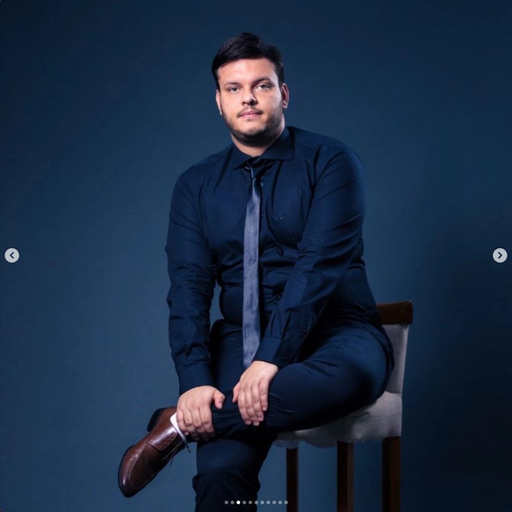
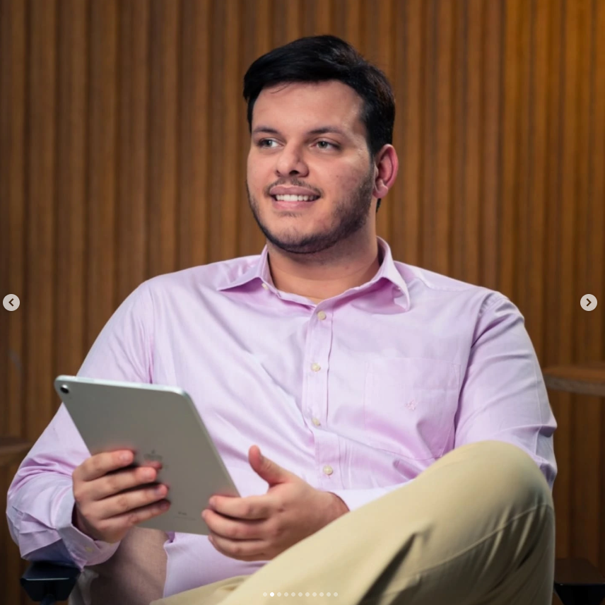
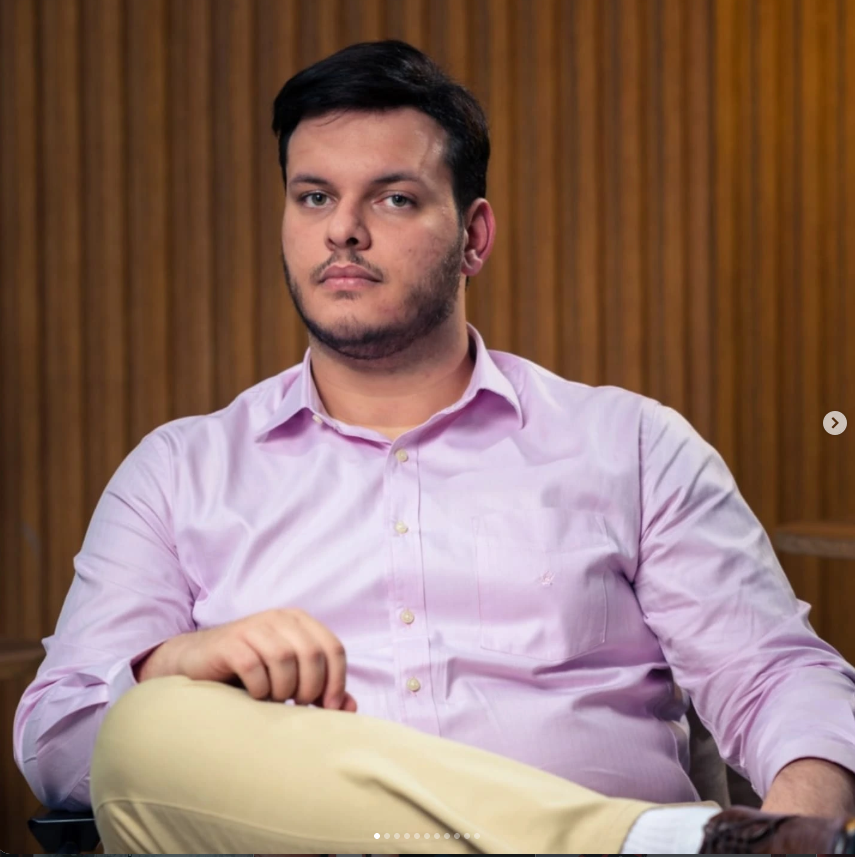
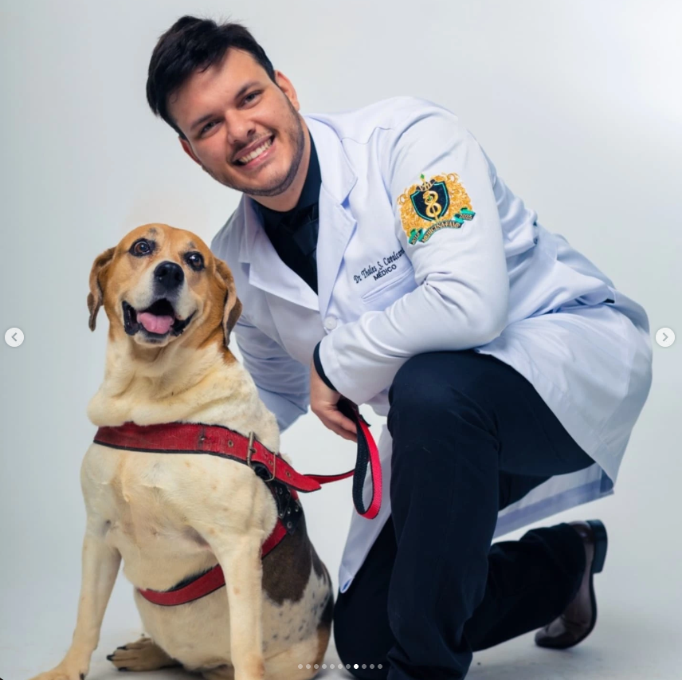

◉
Ansiedade
Quando a preocupação passa a ocupar o dia e o corpo dá sinais de alerta.
Médico · Saúde Mental em Goiânia. Atendimento humanizado para quem busca entender o que sente e encontrar um caminho para o equilíbrio.




Sou Médico · Saúde Mental e dedico minha prática ao cuidado da saúde mental. Acredito que cada pessoa carrega uma história única — e é a partir dela, com escuta atenta e sem julgamentos, que construímos juntos um plano de cuidado, unindo vínculo terapêutico e medicina baseada em evidências.
“Nenhum argumento é necessário para mostrar o poder transformador que a mente pode exercer.”Formação e registro profissional
Um espaço de cuidado para diferentes momentos e necessidades da vida.
Quando a preocupação passa a ocupar o dia e o corpo dá sinais de alerta.
Tristeza persistente, desânimo e perda de interesse no que antes fazia sentido.
Dificuldade para dormir, despertares frequentes ou sono que não descansa.
Dificuldade de foco, organização e impulsividade que impactam estudos e trabalho.
Oscilações de humor que afetam relações, rotina e decisões.
Esgotamento físico e emocional ligado à sobrecarga do dia a dia.
Crises súbitas de medo intenso com sintomas físicos marcantes.
Pensamentos intrusivos e rituais repetitivos que geram sofrimento.
Cada caso é avaliado individualmente na consulta.
Um caminho construído junto com você, com clareza em cada etapa.
Escolha um horário pelo WhatsApp, de forma simples e direta.
Um espaço para conversar com calma sobre o que trouxe você até aqui.
As possibilidades de cuidado são discutidas de forma individual.
O cuidado continua com retornos e ajustes quando necessário.
Av. Exemplo, 1000, Sala 1001
Setor Bueno · Goiânia - GO
CEP 74000-000
Ver no mapa ↗
Por videochamada, com a mesma atenção da consulta presencial, de onde você estiver.
Privacidade na videochamada
Atendimento particular. Emitimos recibo para solicitação de reembolso junto ao seu plano de saúde.
Se ainda ficou alguma dúvida, fale diretamente pelo WhatsApp.
Entre em contato para saber sobre horários e modalidades de atendimento.